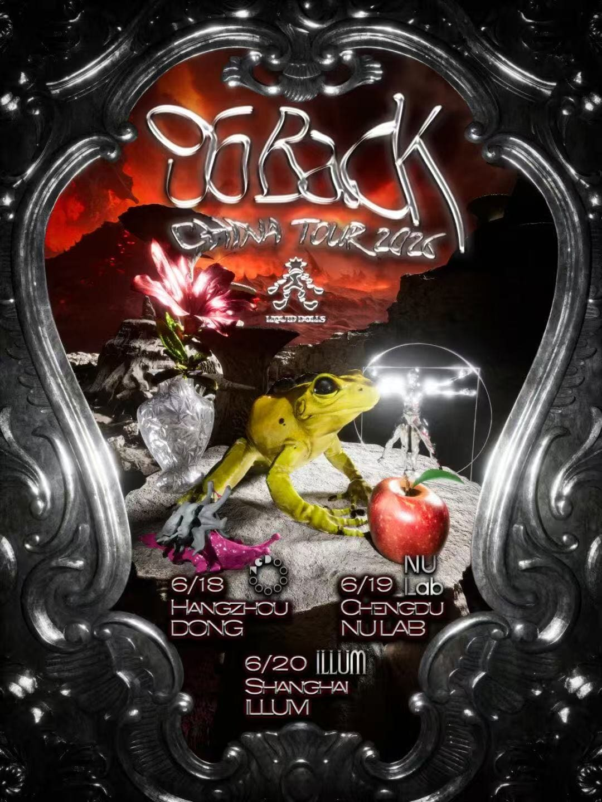

past / Medium
LIQUID DOLLS Pres. SOBACK
LIQUID DOLLS brings SOBACK to ILLUM for the Shanghai stop of the China Tour 2026. Ticketing screenshot confirms 2026-06-20 to 2026-06-21, 22:00-04:00, ILLUM at C PARK LG floor, and 88/108/128 RMB ticket tiers; visible screenshots do not expose support names.

DateJun 20
Time22:00-04:00
VenueILLUM
DistrictChangning
Soundexperimental club, bass, tour stop, left-field club
Price88 / 108 / 128 RMB
Age / IDCheck venue
Source layerwechat-ticketing-and-official-screenshot
Intensityhard
Credibilitysolid
Event Tags
Simple tags for sound, room context, ticket/source status, and details that still need a source check.
How We Recommend This
- RecommendationRecommended as a focused tour-stop listing rather than a broad local lineup: SOBACK is the visible draw, and ILLUM is the right room if you want a darker, bass-leaning left-field club night. The support bill is not visible yet, so treat it as a headliner-led pick.
- Best forBest for readers who follow Liquid Dolls / ILLUM bookings and want a Saturday experimental-club room with one clear tour-stop anchor.
- Verify before goingConfirm live ticket inventory, age policy, support lineup, and running order through the ILLUM reservation route before going.
- Source confidenceMedium-confidence screenshot-backed event: poster and ticketing screenshots confirm title, date, time, venue, price, and main artist. Direct public ticket URL, age policy, and support lineup remain unresolved.
Lineup and Notes
- SOBACKPoster and ticket title list SOBACK for the 2026 China Tour Shanghai stop.
Source Trail
- ILLUM SOBACK China Tour poster screenshot official-poster-screenshot / checked 2026-06-16 User-provided poster confirms SOBACK China Tour 2026 with Shanghai / ILLUM on 2026-06-20.
- ILLUM SOBACK ticketing screenshot ticketing-screenshot / checked 2026-06-16 User-provided ticketing screenshot confirms 2026-06-20 to 2026-06-21, 22:00-04:00, ILLUM, C PARK LG floor, and 88/108/128 RMB ticket tiers.
- ILLUM SOBACK WeChat screenshot official-wechat-screenshot / checked 2026-06-16 User-provided ILLUM Shanghai account screenshot supplies poster context and reservation route; not a direct public URL.
- SmartShanghai ILLUM venue context venue-context / checked 2026-06-16 Venue context only: SmartShanghai lists ILLUM at LG-16, B1/F, C PARK, 658 Zhaohua Lu and describes the room through bass, live-performance, and post-everything club context. User-provided ILLUM screenshots remain the event-level evidence.
Trust Ledger
- Last checked2026-06-16
- Selection basisIncluded for source visibility, room fit, and these editorial signals: techno-adjacent, high intensity, listening/live angle.
- Commercial relationshipNo paid placement recorded.
- Correction routeSend source fixes through RED 980793145 or the corrections policy.
- PolicyHow We Recommend / Corrections